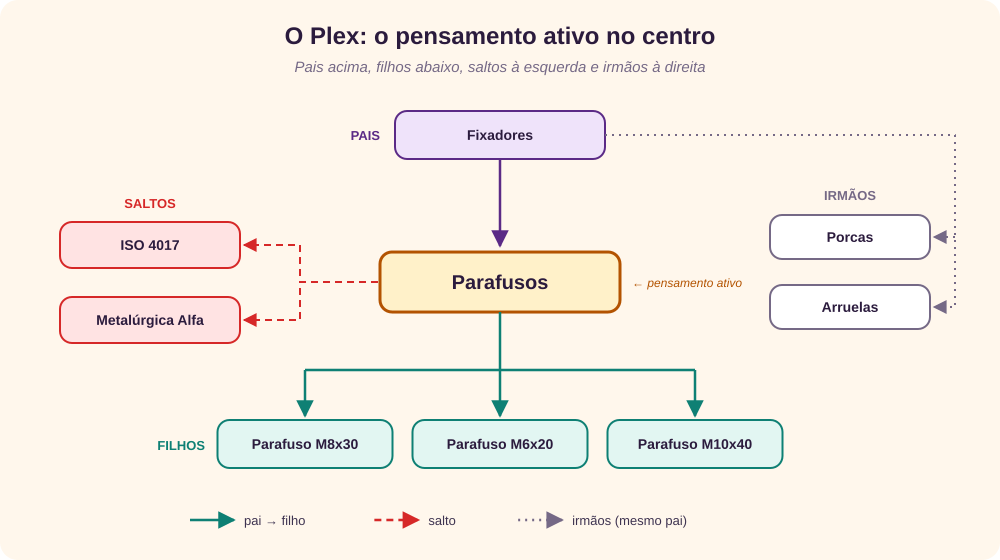
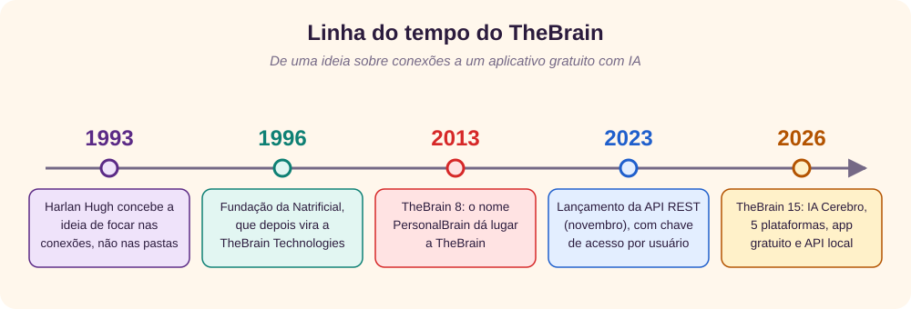
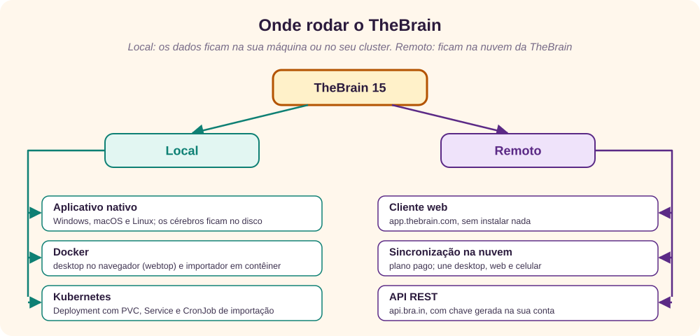
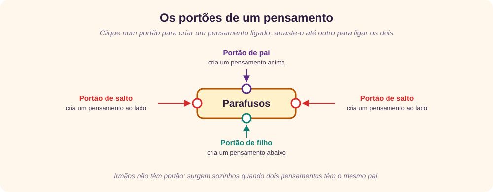
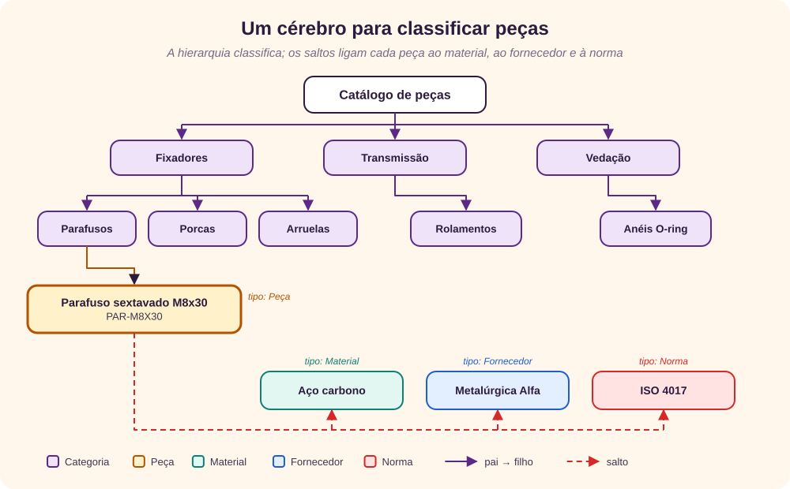

O que é?
O TheBrain é um software de mapas mentais e de gestão de conhecimento pessoal da TheBrain Technologies, de Los Angeles. Em vez de guardar informações em pastas, ele guarda pensamentos (thoughts) e as ligações entre eles, e mostra tudo numa interface gráfica dinâmica que mistura hierarquia e rede. [1] [2]
Cada pensamento pode ter notas, arquivos, links da web e eventos de calendário. Quando você clica num pensamento, ele vai para o centro da tela e os vizinhos se reorganizam em volta. Esse arranjo se chama Plex: [2] [14]

A diferença para um mapa mental comum é que um pensamento pode ter vários pais. “Parafuso M8x30” pode estar, ao mesmo tempo, em “Parafusos” e em “Kit de montagem da bomba”, sem cópia. Na prática, é um grafo de conhecimento que você desenha à mão ou por API. [2] [12]
O vocabulário que vamos usar: [12] [14]
- Cérebro (brain)
- A base com todos os pensamentos. Todo cérebro tem um pensamento inicial (home).
- Pensamento (thought)
- O nó do grafo: tem nome e, opcionalmente, rótulo, tipo, tags, nota e anexos.
- Ligação (link)
- A relação entre dois pensamentos. Pode ter nome, cor e tipo.
- Pai e filho
- Ligação hierárquica. Um filho pode ter vários pais.
- Salto (jump)
- Ligação lateral, sem hierarquia: “está relacionado a”.
- Irmãos (siblings)
- Pensamentos com o mesmo pai. Não são uma ligação própria.
- Tipo (type)
- A classificação principal: o que o pensamento é. Cada pensamento tem no máximo um tipo.
- Tag
- Um marcador transversal, como “Crítica”. Um pensamento pode ter várias.
- Plex
- A visão em que o pensamento ativo fica no centro, cercado pelos vizinhos.
Como surgiu?
A ideia nasceu em 1993, com Harlan Hugh, que sentia a necessidade de focar nas conexões entre as informações, e não nas separações. Em 1996 ele fundou a Natrificial Software Technologies, na Califórnia. A empresa depois passou a se chamar The Brain e, mais tarde, TheBrain Technologies, com sede em Los Angeles e Hugh ainda como CEO. [1] [4]
“A sua tela não deveria parecer um monte de botões bonitos. Deveria ser uma representação dinâmica, uma experiência, de tudo o que é importante para você.”
Harlan Hugh, à revista Feed, em 1999 [1]
Por muitos anos, o produto de uso pessoal se chamou PersonalBrain. A empresa também vendeu versões corporativas, como o TeamBrain e o BrainEKP, premiado em 2008. Com a versão 8, anunciada em 20 de novembro de 2013, o nome passou a ser só TheBrain, e a sincronização entre máquinas entrou num plano de serviço anual. [2] [3] [5]
Em novembro de 2023 chegou a API REST, que permite ler e gravar pensamentos por programa. Em 2026, o TheBrain 15 trouxe a IA Cerebro, novas visões (cartões, mapa mental e árvore) e o mesmo código na web, no Windows, no macOS, no iPhone/iPad e no Android. Trouxe também uma API local, servida pelo próprio aplicativo. O aplicativo completo passou a ser gratuito, e os planos pagos ficaram com a sincronização, a IA e a colaboração. [6] [7] [8] [10] [11]

Como instalar?
Há dois caminhos. No local, os cérebros ficam na sua máquina ou no seu cluster. No remoto, ficam na nuvem da TheBrain. Os dois se combinam: o desktop pode sincronizar com a nuvem, e a API funciona dos dois lados.

Local: o aplicativo nativo
É o caminho oficial e o mais simples. Em thebrain.com/download há instaladores para Windows (.exe, .msi ou .zip, a partir do Windows 10) e links para Mac, Linux e celular. Não é preciso conta nem cartão de crédito. [11]
- Baixe o instalador da sua plataforma.
- Instale e abra o TheBrain.
- Crie um cérebro. Ele nasce com um pensamento inicial.
- Se for usar a API local, abra Configurações › Usuário › API local. Lá ficam o endereço e a documentação. É preciso ter a versão 15.0.534 ou posterior. [10]
Local: Docker
A TheBrain não publica imagem Docker, e o TheBrain é um aplicativo de desktop, não um servidor. Mesmo assim, dá para conteinerizar duas coisas diferentes, e vale separar bem cada uma:
- O próprio desktop, dentro de uma área de trabalho Linux acessível pelo navegador. Aqui uso a imagem webtop, da LinuxServer.io, que entrega um XFCE pelo KasmVNC na porta 3001, com HTTPS. [17]
- A automação: um contêiner com um script que lê e grava no cérebro pela API. É a parte mais útil no dia a dia, e é a que usaremos no exemplo de peças.

O arquivo compose.yaml
services:
thebrain:
image: lscr.io/linuxserver/webtop:ubuntu-xfce
container_name: thebrain
environment:
- PUID=1000
- PGID=1000
- TZ=America/Sao_Paulo
- CUSTOM_USER=giovani
- PASSWORD=${WEBTOP_PASSWORD}
volumes:
- ./thebrain-config:/config
ports:
- "127.0.0.1:3001:3001"
shm_size: "1gb"
restart: unless-stopped
importador:
build: ./importador
profiles: ["ferramentas"]
environment:
- THEBRAIN_API_KEY
- THEBRAIN_BRAIN_ID
- THEBRAIN_API_URL=https://api.bra.in
- PECAS_CSV=/dados/pecas.csv
volumes:
- ./dados:/dados:roPUIDePGIDdefinem o dono dos arquivos em./thebrain-config;TZ, o fuso horário.CUSTOM_USERePASSWORDativam a autenticação básica. A senha vem de uma variável de ambiente, e não do arquivo.- A porta é publicada só em
127.0.0.1. A documentação do webtop avisa que o terminal dele dásudosem senha e que ele não deve ir para a internet sem um proxy reverso com autenticação forte. [17] shm_sizeaumenta a memória compartilhada, que o navegador interno usa.- O importador fica no perfil
ferramentas: não sobe com oup, só quando é chamado. [18]
Subindo e instalando o TheBrain
O read -rs pede a senha sem mostrá-la e sem gravá-la no histórico do shell:
read -rs WEBTOP_PASSWORD && export WEBTOP_PASSWORD
docker compose up -d thebrainAbra https://localhost:3001, aceite o certificado autoassinado e entre com o usuário e a senha. Na área de trabalho que aparece, baixe o pacote Linux em thebrain.com/download e instale-o.
Cuidado com a persistência: só /config sobrevive quando o contêiner é recriado. Se o pacote se extrai numa pasta, guarde a pasta dentro de /config. Se ele se instala no sistema, como um .deb, crie uma imagem derivada (o nome do arquivo abaixo é ilustrativo) e troque image: por build: no Compose:
FROM lscr.io/linuxserver/webtop:ubuntu-xfce
COPY thebrain-linux.deb /tmp/
RUN apt-get update \
&& apt-get install -y /tmp/thebrain-linux.deb \
&& rm -rf /tmp/thebrain-linux.deb /var/lib/apt/lists/*O importador
O importador é o script da seção de peças, numa imagem Python enxuta:
FROM python:3.12-slim
WORKDIR /app
RUN pip install --no-cache-dir requests
COPY importa_pecas.py .
CMD ["python", "importa_pecas.py"]read -rs THEBRAIN_API_KEY && export THEBRAIN_API_KEY
export THEBRAIN_BRAIN_ID=00000000-0000-0000-0000-000000000000
docker compose run --rm importadorEle fala com a API na nuvem (api.bra.in), que funciona com qualquer cérebro sincronizado. Para usar a API local, troque THEBRAIN_API_URL pelo endereço que aparece em Configurações › Usuário › API local. Se ela só aceitar conexões do próprio computador, rode o script dentro da área de trabalho do webtop. [10] [12]
Local: Kubernetes
No Kubernetes, a ideia é a mesma, traduzida em objetos: um Deployment com o webtop, um PersistentVolumeClaim para /config, um Service interno e um CronJob que roda o importador todas as noites. A senha e a chave da API ficam em Secrets. [19] [20] [21] [22]
apiVersion: v1
kind: Namespace
metadata:
name: thebrain
---
apiVersion: v1
kind: Secret
metadata:
name: webtop
namespace: thebrain
type: Opaque
stringData:
PASSWORD: "CHANGE-ME"
---
apiVersion: v1
kind: Secret
metadata:
name: thebrain-api
namespace: thebrain
type: Opaque
stringData:
THEBRAIN_API_KEY: "CHANGE-ME"
THEBRAIN_BRAIN_ID: "00000000-0000-0000-0000-000000000000"
---
apiVersion: v1
kind: PersistentVolumeClaim
metadata:
name: thebrain-config
namespace: thebrain
spec:
accessModes: ["ReadWriteOnce"]
resources:
requests:
storage: 10Gi
---
apiVersion: apps/v1
kind: Deployment
metadata:
name: thebrain
namespace: thebrain
spec:
replicas: 1
strategy:
type: Recreate
selector:
matchLabels: {app: thebrain}
template:
metadata:
labels: {app: thebrain}
spec:
containers:
- name: webtop
image: lscr.io/linuxserver/webtop:ubuntu-xfce
env:
- {name: PUID, value: "1000"}
- {name: PGID, value: "1000"}
- {name: TZ, value: America/Sao_Paulo}
- {name: CUSTOM_USER, value: giovani}
- name: PASSWORD
valueFrom:
secretKeyRef: {name: webtop, key: PASSWORD}
ports:
- containerPort: 3001
resources:
requests: {cpu: 500m, memory: 2Gi}
limits: {memory: 4Gi}
volumeMounts:
- {name: config, mountPath: /config}
- {name: shm, mountPath: /dev/shm}
volumes:
- name: config
persistentVolumeClaim: {claimName: thebrain-config}
- name: shm
emptyDir: {medium: Memory, sizeLimit: 1Gi}
---
apiVersion: v1
kind: Service
metadata:
name: thebrain
namespace: thebrain
spec:
selector: {app: thebrain}
ports:
- {port: 3001, targetPort: 3001}
---
apiVersion: batch/v1
kind: CronJob
metadata:
name: importa-pecas
namespace: thebrain
spec:
schedule: "0 2 * * *"
timeZone: America/Sao_Paulo
concurrencyPolicy: Forbid
jobTemplate:
spec:
backoffLimit: 2
template:
spec:
restartPolicy: OnFailure
containers:
- name: importador
image: registry.exemplo.com/importador-thebrain:1.0
envFrom:
- secretRef: {name: thebrain-api}
env:
- {name: PECAS_CSV, value: /dados/pecas.csv}
volumeMounts:
- {name: dados, mountPath: /dados, readOnly: true}
volumes:
- name: dados
configMap: {name: pecas-csv}Três escolhas importam:
replicas: 1comstrategy: Recreate. O cérebro é um arquivo local do aplicativo, e não um banco com vários escritores. Duas réplicas no mesmo volume corromperiam os dados; oRecreategarante que o pod antigo pare antes de o novo subir. [19]/dev/shmcomoemptyDirem memória faz o papel doshm_sizedo Compose.- O Service é
ClusterIP: nada fica exposto. O acesso é porport-forwardou, se precisar, por um Ingress com autenticação. [23]
Para aplicar, carregar o CSV, abrir a área de trabalho e disparar uma importação sem esperar as 2h da manhã:
kubectl apply -f thebrain.yaml
kubectl -n thebrain create configmap pecas-csv --from-file=pecas.csv
kubectl -n thebrain port-forward svc/thebrain 3001:3001
kubectl -n thebrain create job importa-agora --from=cronjob/importa-pecasRemoto
Sem instalar nada, entre em app.thebrain.com e use o cliente web. Desde o TheBrain 15, ele tem o mesmo código e os mesmos recursos do desktop. Para ter o mesmo cérebro no computador, na web e no celular, é preciso um plano pago, que inclui a sincronização na nuvem. [9] [11]
Para programar contra a nuvem:
- Gere uma chave em app.thebrain.com/api-keys.
- Envie-a no cabeçalho
Authorization: Bearer <chave>. - Consulte a documentação interativa em api.bra.in: o botão Authorize recebe a chave, e o Try it out executa cada chamada. [12]
O primeiro teste é listar os seus cérebros:
curl -s -H "Authorization: Bearer $THEBRAIN_API_KEY" \
https://api.bra.in/brainsA resposta traz, para cada cérebro, o id, o name e o homeThoughtId, que é o pensamento inicial. Guarde o id: ele vai em todas as outras chamadas. [12]
| Local | Remoto | |
|---|---|---|
| Onde ficam os dados | No seu disco, volume ou PVC | Na nuvem da TheBrain |
| Custo | Aplicativo gratuito | Web gratuita; sincronização, IA e colaboração em planos pagos |
| Acesso | Uma máquina (ou o navegador, com webtop) | Qualquer navegador e celular |
| API | API local, com o desktop aberto | api.bra.in, com chave |
| Melhor para | Dados sensíveis e uso individual | Equipes e vários dispositivos |
Os primeiros passos
1. Crie um cérebro. Todo cérebro nasce com um pensamento inicial, que é a raiz da navegação. Na API, ele aparece como homeThoughtId. [12]
2. Crie pensamentos pelos portões. Cada pensamento tem pequenos círculos nas bordas, os portões. Cada um cria um tipo de ligação: [14]

3. Navegue. Clique num pensamento para torná-lo ativo: o Plex se refaz em volta dele. Para ir direto a um pensamento distante, use a busca pelo nome. [14] [15]
4. Enriqueça. Escreva notas (a API as lê e grava em Markdown), anexe arquivos, pastas e endereços da web, e use o rótulo para um dado curto, como um código. [12] [14]
5. Classifique. O tipo diz o que o pensamento é (Peça, Material) e pode definir cor e ícone; cada pensamento tem no máximo um. As tags são marcas transversais (Crítica, Obsoleta), e um pensamento pode ter várias. [12] [14]
6. Fixe o que usa sempre. Os pensamentos fixados (pins) ficam sempre à mão, seja qual for o pensamento ativo. [12]
7. Troque de visão. Além do Plex, o TheBrain 15 mostra o mesmo cérebro como cartões, mapa mental ou árvore, sem perder nenhuma ligação. [7]
Para fixar
- Hierarquia é pai e filho; relação lateral é salto; irmãos surgem sozinhos.
- Tipo é “o que é” (um só); tag é “como está” (várias).
- Um pensamento pode ter vários pais: não duplique, ligue.
Montando um exemplo
O problema: uma fábrica tem milhares de peças. Cada uma pertence a uma família (fixadores, rolamentos, vedações), é feita de um material, vem de um ou mais fornecedores e segue uma norma. As perguntas do dia a dia cruzam essas dimensões: “que peças usam aço inox?”, “o que compramos da Metalúrgica Alfa?”, “quais fixadores seguem a ISO 4017?”.
Num banco relacional, isso vira tabelas e chaves estrangeiras. No TheBrain, vira pensamentos e ligações. A correspondência é esta:
| Banco relacional | TheBrain |
|---|---|
| Linha de uma tabela | Pensamento |
| Tabela (entidade) | Tipo: Peça, Material, Fornecedor, Norma |
| Chave estrangeira N:1 (peça → material) | Salto entre a peça e o material |
| Tabela associativa N:N (peça ↔ fornecedor) | Vários saltos, sem tabela intermediária |
Hierarquia recursiva (categoria_pai_id) | Ligações pai → filho, nativas, com vários pais possíveis |
| Coluna descritiva (estoque, especificação) | Nota ou rótulo |
Consulta com JOIN | Clicar no pensamento e ver os vizinhos, ou GET …/graph na API |
E o que o TheBrain não faz: garantir integridade (nada impede um salto errado), controlar transações ou responder a consultas agregadas, como a soma do estoque por material. Por isso, a regra do exemplo é clara: o ERP continua sendo o dono dos dados, e o TheBrain é a camada de navegação e de conhecimento, recarregada a partir de um arquivo exportado.
Para fixar
- Relações N:N e hierarquias com vários pais são naturais no TheBrain.
- Totais, integridade e transações continuam no banco relacional.
Criando um banco de dados para classificação de peças
1. O modelo

São cinco tipos: Categoria, Peça, Material, Fornecedor e Norma. A árvore Catálogo › categoria › subcategoria › peça classifica, e os saltos ligam cada peça ao material, ao fornecedor e à norma. Materiais, fornecedores e normas também ficam como filhos de três pensamentos-índice (Materiais, Fornecedores e Normas), presos ao pensamento inicial, para que você possa navegar a partir deles.
2. Uma peça feita à mão
Antes de automatizar, monte uma peça no aplicativo para sentir o modelo:
- No pensamento inicial, crie o filho “Catálogo de peças”; sob ele, “Fixadores”; e, sob este, “Parafusos”.
- Sob “Parafusos”, crie “Parafuso sextavado M8x30” e ponha
PAR-M8X30no rótulo. - Crie o tipo Peça e aplique-o ao pensamento.
- Pelo portão lateral, crie os saltos para “Aço carbono”, “Metalúrgica Alfa” e “ISO 4017”.
- Escreva a ficha técnica na nota.
3. Os dados de entrada
O resto vem de uma exportação do ERP, aqui simplificada num CSV separado por ponto e vírgula. Os fornecedores são fictícios; as normas são reais: ISO 4017 (parafusos sextavados), ISO 4032 (porcas sextavadas), ISO 7089 (arruelas lisas), ISO 15 (dimensões de rolamentos radiais) e ISO 3601-1 (anéis O-ring).
codigo;descricao;categoria;subcategoria;material;fornecedor;norma;estoque
PAR-M8X30;Parafuso sextavado M8x30;Fixadores;Parafusos;Aço carbono;Metalúrgica Alfa;ISO 4017;1200
PAR-M6X20;Parafuso sextavado M6x20;Fixadores;Parafusos;Aço inox A2-70;Metalúrgica Alfa;ISO 4017;850
POR-M8;Porca sextavada M8;Fixadores;Porcas;Aço carbono;Metalúrgica Alfa;ISO 4032;3000
ARR-8;Arruela lisa 8 mm;Fixadores;Arruelas;Aço carbono;Metalúrgica Alfa;ISO 7089;5000
ROL-6204;Rolamento de esferas 6204-2RS;Transmissão;Rolamentos;Aço cromo;Rolamentos Beta;ISO 15;80
VED-OR20;Anel O-ring 20x2 NBR 70;Vedação;Anéis O-ring;Borracha NBR;Vedações Gama;ISO 3601-1;4004. O script de importação
O script usa só a biblioteca requests e seis endpoints da API. Ele é idempotente: antes de criar um pensamento, procura-o pelo nome exato; antes de ligar dois, verifica se a ligação já existe. Pode rodar todas as noites sem duplicar nada. [12] [13]
"""Carrega pecas.csv num cérebro do TheBrain usando a API REST."""
import csv
import os
import requests
API = os.environ.get("THEBRAIN_API_URL", "https://api.bra.in").rstrip("/")
BRAIN = os.environ["THEBRAIN_BRAIN_ID"]
CSV = os.environ.get("PECAS_CSV", "pecas.csv")
S = requests.Session()
S.headers["Authorization"] = "Bearer " + os.environ["THEBRAIN_API_KEY"]
NORMAL, TIPO = 1, 2 # kind
FILHO, PAI, SALTO = 1, 2, 3 # relation
PRIVADO = 1 # acType
ids = {}
def vazio(r):
return not r.ok or r.text.strip() in ("", "null")
def buscar(nome):
if nome not in ids:
r = S.get(f"{API}/thoughts/{BRAIN}", params={"nameExact": nome})
ids[nome] = None if vazio(r) else r.json()["id"]
return ids[nome]
def ligar(a, b, relacao):
if not vazio(S.get(f"{API}/links/{BRAIN}/{a}/{b}")):
return # já estão ligados
corpo = {"thoughtIdA": a, "thoughtIdB": b, "relation": relacao}
S.post(f"{API}/links/{BRAIN}", json=corpo).raise_for_status()
def garantir(nome, origem=None, relacao=FILHO, tipo=None, rotulo=None, kind=NORMAL):
tid = buscar(nome)
if tid:
if origem:
ligar(origem, tid, relacao)
return tid
corpo = {"name": nome, "kind": kind, "acType": PRIVADO}
if origem:
corpo.update(sourceThoughtId=origem, relation=relacao)
if tipo:
corpo["typeId"] = tipo
if rotulo:
corpo["label"] = rotulo
r = S.post(f"{API}/thoughts/{BRAIN}", json=corpo)
r.raise_for_status()
ids[nome] = r.json()["id"]
return ids[nome]
home = S.get(f"{API}/brains/{BRAIN}").json()["homeThoughtId"]
tipos = {t: garantir(t, kind=TIPO)
for t in ("Peça", "Categoria", "Material", "Fornecedor", "Norma")}
catalogo = garantir("Catálogo de peças", home)
hubs = {h: garantir(h, home) for h in ("Materiais", "Fornecedores", "Normas")}
jumps = (("material", "Material", "Materiais"),
("fornecedor", "Fornecedor", "Fornecedores"),
("norma", "Norma", "Normas"))
with open(CSV, encoding="utf-8") as f:
for p in csv.DictReader(f, delimiter=";"):
cat = garantir(p["categoria"], catalogo, tipo=tipos["Categoria"])
sub = garantir(p["subcategoria"], cat, tipo=tipos["Categoria"])
peca = garantir(p["descricao"], sub, tipo=tipos["Peça"], rotulo=p["codigo"])
for coluna, tipo, hub in jumps:
alvo = garantir(p[coluna], hubs[hub], tipo=tipos[tipo])
ligar(peca, alvo, SALTO)
nota = ("| Campo | Valor |\n|---|---|\n"
f"| Código | {p['codigo']} |\n"
f"| Estoque | {p['estoque']} un. |\n")
S.post(f"{API}/notes/{BRAIN}/{peca}/update",
json={"markdown": nota}).raise_for_status()
print("ok:", p["codigo"], "-", p["descricao"])Os números do script vêm da especificação da API: [12]
| Campo | Valores |
|---|---|
kind | 1 normal · 2 tipo · 3 evento · 4 tag · 5 sistema |
relation | 1 filho · 2 pai · 3 salto · 4 irmão |
acType | 0 público · 1 privado |
5. Rodando
python -m pip install requests
read -rs THEBRAIN_API_KEY && export THEBRAIN_API_KEY
export THEBRAIN_BRAIN_ID=00000000-0000-0000-0000-000000000000
python importa_pecas.pyok: PAR-M8X30 - Parafuso sextavado M8x30
ok: PAR-M6X20 - Parafuso sextavado M6x20
ok: POR-M8 - Porca sextavada M8
ok: ARR-8 - Arruela lisa 8 mm
ok: ROL-6204 - Rolamento de esferas 6204-2RS
ok: VED-OR20 - Anel O-ring 20x2 NBR 706. Consultando
No aplicativo, clique em “Aço carbono”: os saltos mostram todas as peças feitas dele. Clique em “Metalúrgica Alfa”: aparece tudo o que ela fornece. É o equivalente visual de um JOIN. Pela API, a busca por texto e a vizinhança de um pensamento fazem o mesmo papel:
curl -s -H "Authorization: Bearer $THEBRAIN_API_KEY" \
"https://api.bra.in/search/$THEBRAIN_BRAIN_ID?queryText=M8&maxResults=30"
curl -s -H "Authorization: Bearer $THEBRAIN_API_KEY" \
"https://api.bra.in/thoughts/$THEBRAIN_BRAIN_ID/$MATERIAL_ID/graph"A resposta de /graph separa parents, children, jumps, siblings, tags e links. As peças que usam o material vêm em jumps. [12]
7. Próximos passos
- Marque peças com as tags “Crítica” ou “Obsoleta”.
- Crie kits: um pensamento “Kit de montagem da bomba” como pai adicional das peças que o compõem.
- Anexe desenhos em PDF com
POST /attachments/{brainId}/{thoughtId}/file. - Atualize nomes, rótulos e cores com
PATCH, que segue o formato JSON Patch. [12] [24]
Conclusões
- O TheBrain é, no fundo, um grafo de conhecimento com uma interface muito boa para navegar. Ele brilha quando as relações importam mais que as colunas.
- Instalar é simples no desktop e na web. Docker e Kubernetes são possíveis, mas não oficiais: servem para hospedar o desktop num servidor e, principalmente, para automatizar a carga de dados pela API.
- A API REST, na nuvem ou local, faz do TheBrain um destino de integração. O exemplo carrega uma base de peças a partir de um CSV, sem duplicar nada.
- Ele não substitui o banco relacional nem o ERP: não tem integridade, transações nem agregações. Use-o como camada de navegação e documentação, alimentada pelo sistema que é dono dos dados.
- Para tirar dúvidas, as melhores fontes são a documentação interativa da API, o guia do usuário e o fórum oficial. [12] [14] [16]
Referências
- TheBrain Technologies, “About TheBrain”, acesso em 28/09/2026, thebrain.com/about.
- Wikipedia (em inglês), “TheBrain”, acesso em 28/09/2026, en.wikipedia.org/wiki/TheBrain.
- Wikipedia (em inglês), “TheBrain Technologies”, acesso em 28/09/2026, en.wikipedia.org/wiki/TheBrain_Technologies.
- Computerworld, “Linking Your Thinking”, 31/01/2000, acesso em 28/09/2026, computerworld.com/article/1368716/linking-your-thinking.html.
- PRWeb, “TheBrain 8 Delivers Advanced Information Management with Powerful New Knowledge Visualization Features”, 20/11/2013, acesso em 28/09/2026, prweb.com/releases/thebrain_8_delivers_advanced_information_management_with_powerful_new_knowledge_visualization_features/prweb11352059.htm.
- TheBrain Blog, “Introducing TheBrain API”, 01/11/2023, acesso em 28/09/2026, thebrain.com/blog/introducing-thebrain-api.
- TheBrain Technologies, “TheBrain 15 — Beyond next-gen, with Cerebro AI”, acesso em 28/09/2026, thebrain.com/products/thebrain/thebrain15.
- TheBrain Blog, “TheBrain 15 Achieves True Cross-Platform Parity: One Codebase, Five Platforms, Full Feature Equality”, 24/04/2026, acesso em 28/09/2026, old.thebrain.com/blog/true-cross-platform-parity.
- TheBrain Blog, “Unifying TheBrain: Version 15 Now Live on the Web”, acesso em 28/09/2026, thebrain.com/blog/unifying-thebrain.
- TheBrain Blog, “TheBrain API: Now Fully Local and Unrestrained”, 28/04/2026, acesso em 28/09/2026, thebrain.com/blog/thebrain-api-local.
- TheBrain Technologies, “Download TheBrain — Free, forever”, acesso em 28/09/2026, thebrain.com/download.
- TheBrain Technologies, TheBrain API, documentação interativa, versão 1.0.5, acesso em 28/09/2026, api.bra.in.
- TheBrainTech, “thebrain-api-quickstart-python”, GitHub, acesso em 28/09/2026, github.com/TheBrainTech/thebrain-api-quickstart-python.
- TheBrain Technologies, TheBrain 14 User Guide (PDF), acesso em 28/09/2026, assets.thebrain.com/documents/TheBrain14/TheBrain14-User-Guide-v01.pdf.
- TheBrain Technologies, “Tutorials”, acesso em 28/09/2026, thebrain.com/tutorials.
- TheBrain Forums, fórum oficial, acesso em 28/09/2026, forums.thebrain.com.
- LinuxServer.io, “webtop”, acesso em 28/09/2026, docs.linuxserver.io/images/docker-webtop.
- Docker, “Compose file reference”, acesso em 28/09/2026, docs.docker.com/reference/compose-file.
- Kubernetes, “Deployments”, acesso em 28/09/2026, kubernetes.io/docs/concepts/workloads/controllers/deployment.
- Kubernetes, “Persistent Volumes”, acesso em 28/09/2026, kubernetes.io/docs/concepts/storage/persistent-volumes.
- Kubernetes, “CronJob”, acesso em 28/09/2026, kubernetes.io/docs/concepts/workloads/controllers/cron-job.
- Kubernetes, “Secrets”, acesso em 28/09/2026, kubernetes.io/docs/concepts/configuration/secret.
- Kubernetes, “Use Port Forwarding to Access Applications in a Cluster”, acesso em 28/09/2026, kubernetes.io/docs/tasks/access-application-cluster/port-forward-access-application-cluster.
- IETF, RFC 6902, “JavaScript Object Notation (JSON) Patch”, 2013, acesso em 28/09/2026, rfc-editor.org/rfc/rfc6902.